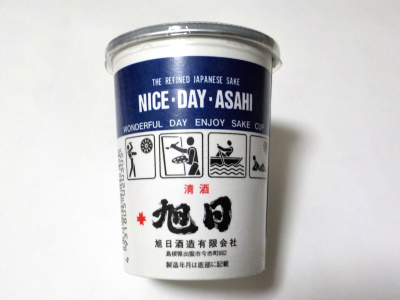
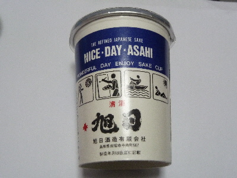

旭日のナイスデイアサヒ。
2023/10/28

コスモスで231円でした。
最初味が濃いなーって思ったんですが、飲んでるうちに慣れてきました。
個人的にはもうちょっと醸造アルコールを増やして欲しいかな。
島根県出雲市今市町662
更新日 : 2023/10/28
2023/10/28

コスモスで231円でした。
最初味が濃いなーって思ったんですが、飲んでるうちに慣れてきました。
個人的にはもうちょっと醸造アルコールを増やして欲しいかな。
2017/03/17
パッケージがお酒っぽくないですね。
こうゆうのは、子供が間違えて飲むじゃないかー！って怒られないんだろうな。ジュースっぽくないし、あんまり美味しそうじゃないかも。

お酒の味は、すっきり甘くて飲みやすかったです。
おつまみなくても、ちびちび美味しく飲めました。